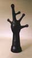
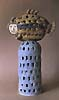
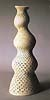
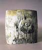
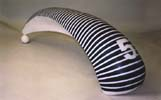
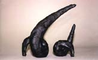
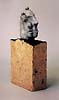
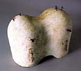

| The XV International
Ceramic Symposium Panevežys 2004
Article by Patrick Mateescu

Before talking about the XV Ceramic Symposium Panevežys 2004,
I would like to present a short overview of the actual situation
of the ceramics in Lithuania. Every year a group of selected artists
from foreign countries and a few of the best ceramists from Lithuania's
bigger cities such as Vilnius and Kaunas come to Panevežys. I don’t
know of any other city in the world that might have such a long
and fruitful experience in organizing symposiums as the Panevežys
Civic Art Gallery and its energetic and dedicated curator, Jolanta
Lebednykiene. In the last fifteen years the gallery has accumulated
a huge and rich collection of ceramic works in a great variety of
styles and techniques.
Lithuania is a small and poor country with a population of 3.5
million but very ambitious concerning the development of ceramics.
Although there are no prominent achievements in their ceramic history,
the Lithuanians are trying now to promote a new generation of excellent
ceramic artists, working within this kind of cultural greenhouse,
the symposiums. What is new and significant in ceramics all over
the world it is brought home through these temporary contacts.
Besides the Panevežys Symposium, which is one of the most
important, there are other international symposiums organized in
factories and universities all around Lithuania. This kind of cultural
greenhouse is not only very helpful to the Lithuanians but also
to the foreign artists who become aware of new techniques from the
low temperatures of earthenware to the high temperature of porcelain
and stoneware.
|  |
 |
|
Jousts Lebednykas
(Lithuania)
Tree
|
Nerute Ciuksiene
(Lithuania)
Chasing Sun Reflections III |
Looking at the collection of the past fifteen years of ceramics
produced under this kind of “greenhouse”, I found many
”deja-vue” objects, and almost an inflation of small-size,
insignificant works and only handful of powerful outdoor monumental
sculptures for the benefit of the vast public spaces. Each new symposium
where prominent international artists work together with some of
the best Lithuanian ceramic artists brings about a significant even
spectacular improvement in the works presented to the final exhibition.
|  |
 |
|
Eugenijus Cibinskas
(Lithuania)
Guess My Name II
|
Egidijus Radvenskas
(Lithuania)
Fossil II |
Remarkable sculptures with strong Nordic baroque influence are the
works of Jousts Lebednykas and Nerute Ciuksiene, whereas Eugenijus
Cibinskas’s works are very sensitive and delicate. Organic
or structuraly diverse and spectacular are the pieces made by Kostas
Urbanavicius and by Egidijus Radvenskas, but the most impressive
work of the Lithuanian team are, in my opinion, the compositions
of Remedius Sederevicius, for his excellent technique, originality
and power of expression.
|  |
 |
|
Remedius Sederevicius
(Lithuania)
Composition Grand Prix No. 5
|
Patrick Mateescu
(Romania/USA)
Hai Ku #6 |
Among the guest artists I would like to mention the sympathetic
Norio Shibata for his exuberance in trying so many different experiments,
unique combinations of ceramic and glass, and a most curious and
fun mixing of wheat flour, yeast and powder of refractory clay.
Toghrul Dadashov, the Azerbaijan-Austrian ceramist, the youngest
of the participants, made very abstract small installations that
I cannot say I was able to understand; Sanita Mickus from Latvia
has an evident erotic expression in her work, Rimas VisGirda made
many small expressive figurative sculptures that repeat his own
successful work. Describing my own sculpture, Haiku #6, I consider
it a different page of my three-dimensional ‘poetry’
installation.
|  |
 |
| Rimas VisGirda
(USA)
Lovers
|
Toghrul Dadashov
(Azerbaijan)
Impression |
Having organized so many successful events, the Panevežys Symposium
enjoys a good reputation. However, I would like to recommend to
its organizers to avoid easy success and applauses from the professional
specialists and sponsors, and to emphasize the creation of monumental
outdoor sculptures and the promotion of new and original young artists.
Article courtesy of Patrick Mateescu.
The Panevežys Symposium 2004 was organized by Jolanta Lebednykiene,
director of the Panevežys
Civic Art Gallery, Panevežys, Lithunaia, and held in
June/July 2004.
More Articles
|
{kind=link}
{kind=link}
{kind=link}
{kind=link}
{kind=link}
{kind=link}
{kind=link}
{kind=link}